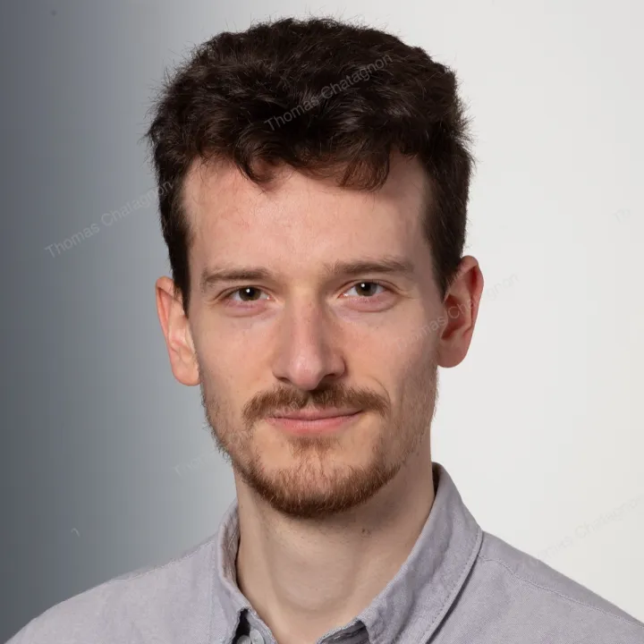

Postdoctoral researcher · Forschungszentrum Jülich
Thomas Chatagnon
My research focuses on understanding and modelling the complex dynamics associated with interpersonal contacts and balance recovery in dense human crowds. The goal of this research is to improve the safety and comfort of attendees at large-scale events.
I am a postdoctoral researcher at Forschungszentrum Jülich (Germany), in the Modelling division of the Institute for Advanced Simulation: Civil Safety Research (IAS-7) (opens in a new tab). I hold a PhD in Biomechanics from ENS Rennes (France) and have a background in fluid dynamics, with MSc degrees from Cranfield University (UK) and ENSEEIHT (France). The main research areas associated with my work are human gait and postural control, crowd dynamics, and complex systems modelling.
Research interests
- Dense crowd dynamics
- Biomechanics in crowds
- Interpersonal contacts

Projects
An overview of my research and engineering projects.
-
InDense From Individual Balance to Ultra-Dense Crowd Dynamics
Accepted · DFG funding
Introducing new modelling paradigms accounting for human balance recovery mechanisms to represent the complex dense crowd dynamics observed in experiments.
-
EPiC Emergence and Perception of Physical Contacts in Human Crowds
Under review · DFG grant
Studying how physical contacts emerge, are perceived and are accepted in human crowds.
-
Physical Interactions in Crowds
Workshop · In preparation
Co-organised with Dr Juliane Adrian and Dr Mira Küpper.
Publications
Selected academic publications.
-
Giving particles legs: How balance recovery may drive emergent collective dynamics in ultra-dense crowds (opens in a new tab)
2026
PLOS Complex Systems, vol. 3
-
Measuring gait space: new dimensions for crowd flow (opens in a new tab)
2026
Fire Safety Journal, vol. 162
-
Exploring dense crowd dynamics: state of the art and emerging paradigms (opens in a new tab)
2025
Crowd Dynamics, vol. 5, pp. 9–36
-
Glossary for Research on Human Crowd Dynamics — 2nd Edition (opens in a new tab)
2025
Collective Dynamics, vol. 10
-
Classification of first recovery steps after quiet standing following external perturbation from different directions (opens in a new tab)
2025
Journal of Biomechanics, vol. 184
-
Temporal segmentation of motion propagation in response to an external impulse (opens in a new tab)
2024
Safety Science, vol. 175
-
Stepping strategies of young adults undergoing sudden external perturbation from different directions (opens in a new tab)
2023
Journal of Biomechanics, vol. 157
-
SPH crowds: Agent-based crowd simulation up to extreme densities using fluid dynamics (opens in a new tab)
2021
Computers & Graphics, vol. 98
Contact
Let’s connect. Reach out for collaborations, questions, or just to chat about crowd dynamics.